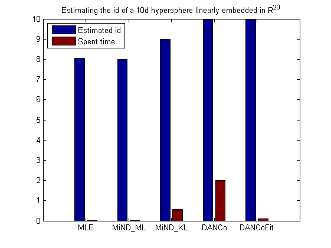
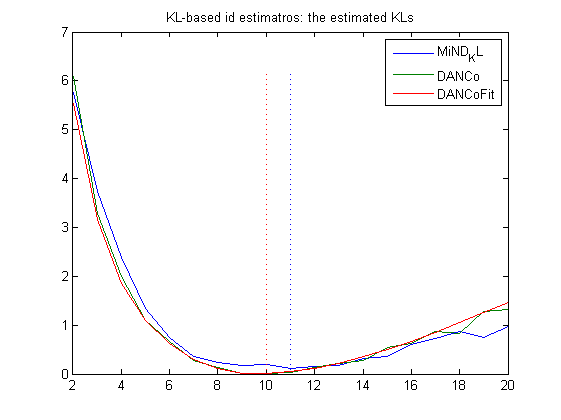

Intrinsic Dimensionality (id) estimation
In the past decade the development of automatic techniques to estimate the intrinsic dimensionality of a given dataset has gained considerable attention due to its relevance in several application elds.
In this small toolbox some of the state-of-art techniques are implemented as functions that use a "standard" interface to use them, thus allowing client code to be decoupled from the knowledge of the applied technique.
For more details see/cite:
"Minimum Neighbor Distance Estimators of Intrinsic Dimension", A.Rozza, G.Lombardi, C.Ceruti, E.Casiraghi, P.Campadelli, Published to the European Conference of Machine Learning (ECML 2011).
"DANCo: Dimensionality from Angle and Norm Concentration", C. Ceruti, S. Bassis, A. Rozza, G. Lombardi, E. Casiraghi, P. Campadelli arXiv:1206.3881v1, http://arxiv.org/abs/1206.3881v1
Contents
Usage of this id-estimation toolbox
As an example here we generate a simple dataset and test all the implemented techniques on it to compare the results, the dataset is an hypersphere in R^{10} linearly embedded in R^{20}.
% Generating the dataset: d = 10; D = 20; X = randsphere(d,500); V = linSubspSpanOrthonormalize(randn(D,d)); data = V*X; % A first base estimation: fprintf('MLE => %2.2f\n', MLE(data)); fprintf('DANCoFit => %2.2f\n', DANCoFit(data));
MLE => 8.07 DANCoFit => 10.00
% The techniques: estimators = {'MLE','MiND_ML','MiND_KL','DANCo','DANCoFit'}; % Initializing the results: idEst = zeros(1,numel(estimators)); spentTime = zeros(1,numel(estimators)); % Running the experiments: for i = 1:numel(estimators) % Obtaining the funciton: estimator = str2func(estimators{i}); % Estimating: tic; idEst(i) = estimator(data); spentTime(i) = toc; end % Plotting the results: figure; bar([idEst(:),spentTime(:)]); hold on; plot([0,numel(estimators)+1],[d,d],'b:'); set(gca,'xticklabel',estimators); legend({'Estimated id','Spent time'},'Location','NorthWest'); title(sprintf('Estimating the id of a %dd hypersphere linearly embedded in R^{%d}',d,D));
Estimators based on the Kullback-Leibler divergence
Some of the presented algorithms estimate the Kullback-Leibler divergence between the distribution of some statistics computed on the real dataset and those computed on synthetically-cenerated data (hyperspheres) or by means of fitting functions (trained using the statistics produced by synthetic data). Here the results obtained by some of them.
% Initialization: estimators = {'MiND_KL','DANCo','DANCoFit'}; % Initializing the results: idEst = zeros(1,numel(estimators)); spentTime = zeros(1,numel(estimators)); kls = zeros(numel(estimators),D); % Running the experiments: for i = 1:numel(estimators) % Obtaining the funciton: estimator = str2func(estimators{i}); % Estimating: tic; [idEst(i),kls(i,:)] = estimator(data); spentTime(i) = toc; end % Notice that DANCo produces unreliable results for d=1: Ds = 2:D; kls2 = kls(:,Ds); % Plotting the results: figure; plot(Ds,kls2'); hold on; plot([idEst;idEst],[zeros(size(idEst));max(kls2(:))*ones(size(idEst))],':'); legend(estimators,'Location','NorthEast'); title('KL-based id estimatros: the estimated KLs');